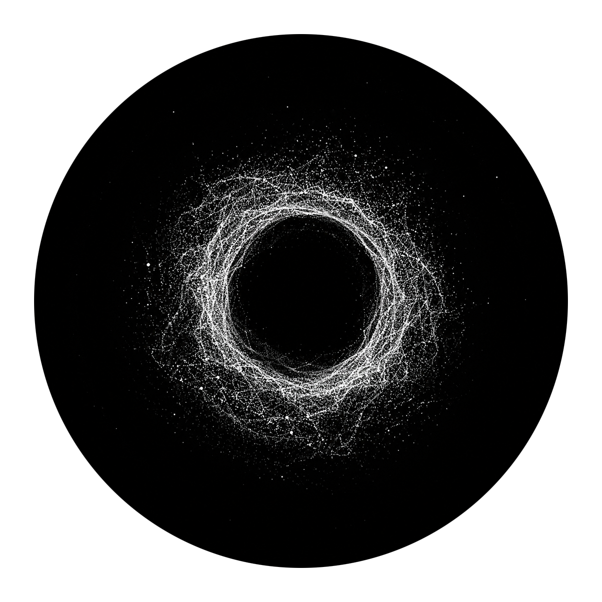

VOID / PARTICLE MEMORY
A generative particle artwork. Give it a photograph, a 3D model or a point cloud, and a swarm of particles becomes a living memory: it converges on the source, lives with it, drifts away, forgets, and finds its way back.
by Mehran Ahmadi · v0.11.1 · source
Click inside to give VOID your attention · sound needs one gesture open full screen →
WHAT YOU ARE LOOKING AT
- MEMORYthe shape the particles are trying to remember
- LIFEa particle-life ecosystem of attracting and repelling species
- VOIDthe pull toward dissolution
TRY THIS FIRST
- Press ? — the controls guide introduces itself.
- Drop a photo, a
.glb/.objmodel or a.plycloud on the canvas, or press O. - Press L and play some music — the swarm answers it.
- Press E and watch VOID search its own behaviour.
- Press S for the screensaver; any input returns.
TESTER NOTES
- Needs WebGL2. The panel's stats line reads
[gpu]or[cpu];[cpu]means the GPU path fell back. - Listening (microphone or shared tab audio) needs a secure page. This one is.
- Your last source is remembered in this browser only. Nothing is recorded, uploaded or sent.
- If the canvas stays black, reload once. If it still does, that is exactly the kind of thing I want to hear about.
Something broken, or something beautiful? Open an issue on GitHub.
VOID is free to experience and share, but it is an artwork rather than a template: the code and assets here are not licensed for reuse or derivative works. Terms.